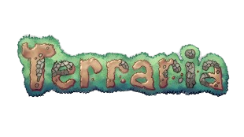

Izpēti pasauli. Cīnies ar bosiem. Izdzīvo.
Kas ir Terraria?
Izdzīvošana un Būvēšana
Terraria ir 2D piedzīvojumu spēle, kurā spēlētājs iegūst resursus, būvē mājas un aizsardzību, un cīnās ar radījumiem.
Episko Bosu Cīņas
Vairāk nekā 30 bosu gaida tevi – no Acs un Kaula Čūskas līdz pat Moon Lord – spēcīgākajam ienaidniekam spēlē.
Milzīgs Satura Apjoms
Vairāk nekā 5000 priekšmetu, 20+ NPC, klases, biomi, notikumi un daudz kas cits! Spēle regulāri saņem atjauninājumus.
Kooperatīvā Spēle
Spēlē kopā ar draugiem tiešsaistē vai vietējā tīklā. Terraria atbalsta vairākus spēlētājus vienā serverī.